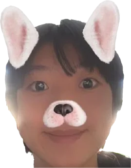

David Liu
Software engineering at Western
Build
Tethos Platform, Kunlun, this site
Lead
Tethos, free software for nonprofits
Play
Classical guitar, Muay Thai, chess
davidliu.work
hey! i'm the AI version of david. come talk to me :)
